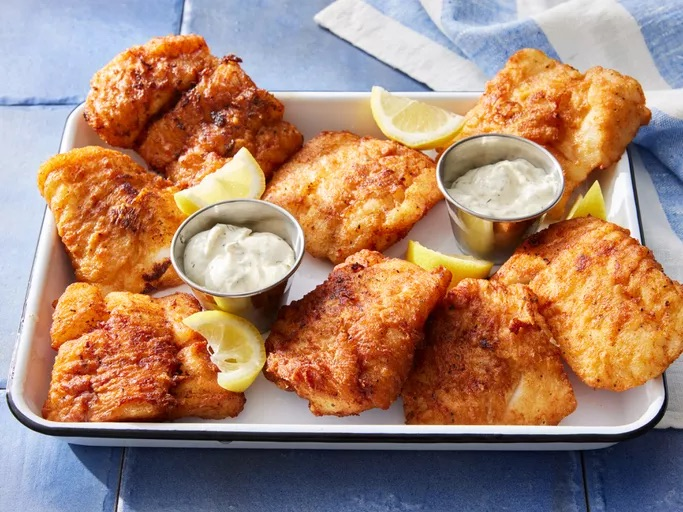

Home
Beer Batter Fish Made Great

This beer-battered fish is a great recipe and very easy to make. We often fish all day with friends and then cook the fish afterward out on deck, enjoying the fresh catch straight from the water. The crispy, golden-brown coating is light and airy, thanks to the beer, while a blend of garlic powder, paprika, and black pepper adds just the right amount of seasoning. Served hot with a squeeze of lemon and your favorite dipping sauce, this fish is a delicious reward after a long day on the water.
Ingredients
- 2 quarts vegetable oil for frying
- 8 (4 ounce) fillets cod
- salt and pepper to taste
- 1 cup all-purpose flour
- 2 tablespoons garlic powder or to taste
- 2 tablespoons paprika or to taste
- 2 teaspoons salt or to taste
- 2 teaspoons ground black pepper or to taste
- 1 large egg, beaten
- 1 (12 fluid ounce) can or bottle beer, or as needed
Steps
- Gather all ingredients.
- Heat oil in a deep fryer to 365 degrees F (185 degrees C). Rinse cod fillets, pat dry, and season with salt and pepper.
- Mix flour, garlic powder, paprika, salt, and pepper in a large bowl; add egg and stir well to combine. Gradually mix in enough beer to make a thin batter.
- Dip cod fillets into the batter to coat. Carefully lower fillets, one at a time, into the hot oil.
- Fry several fillets at a time, turning once, until cooked through and golden brown, about 2 minutes per side.
- Drain on paper towels. Repeat to cook remaining fillets. Serve warm.